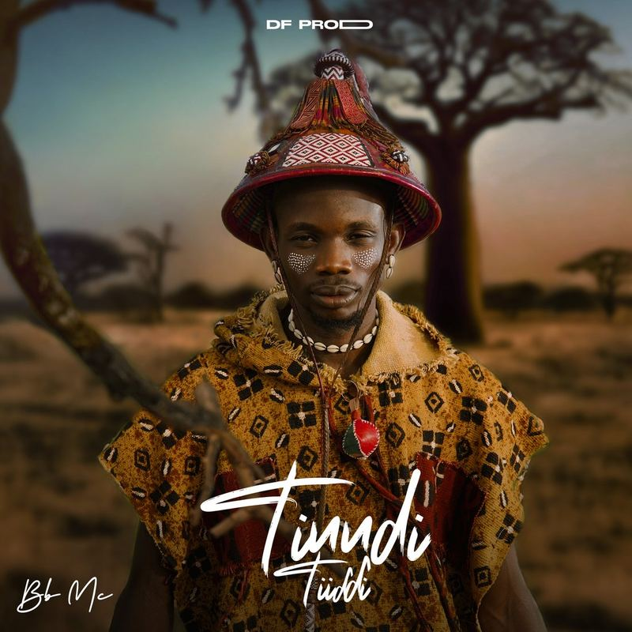
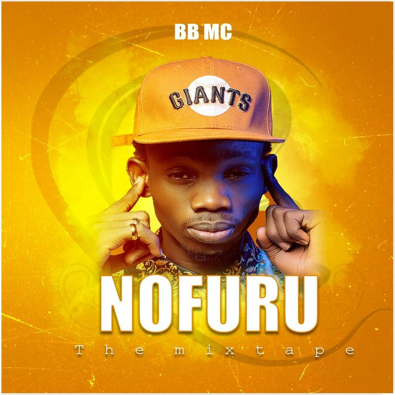
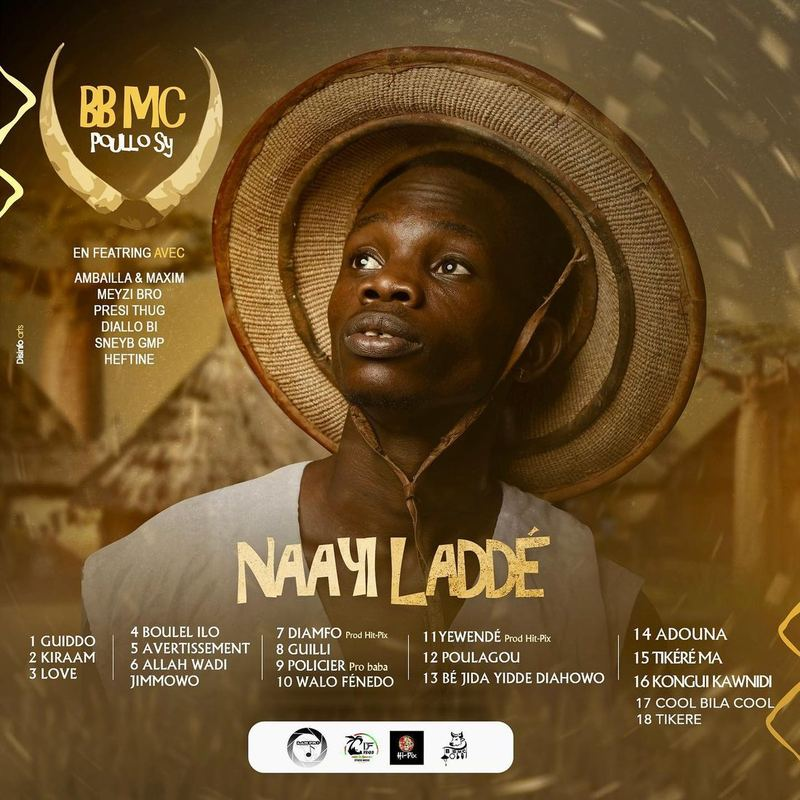
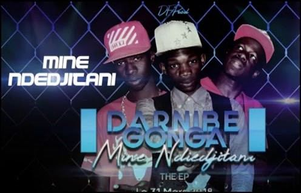
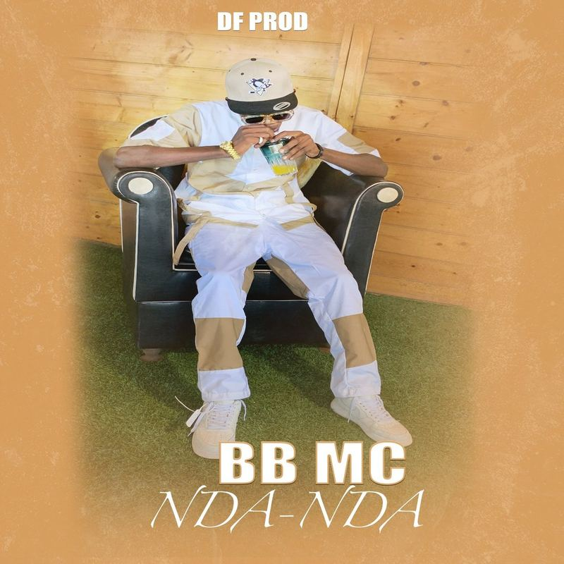
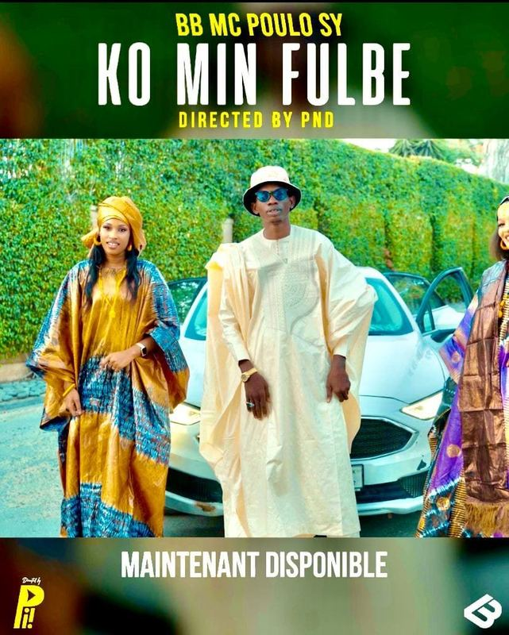
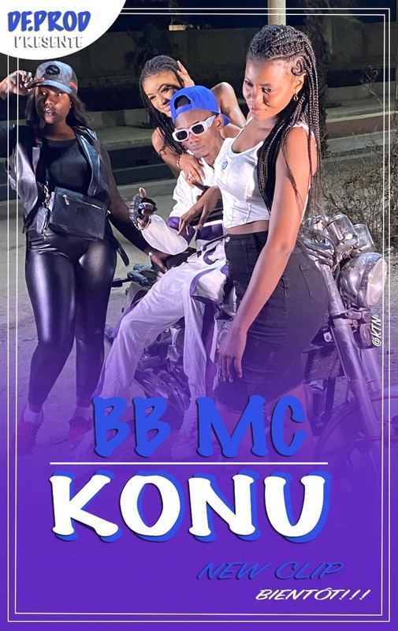
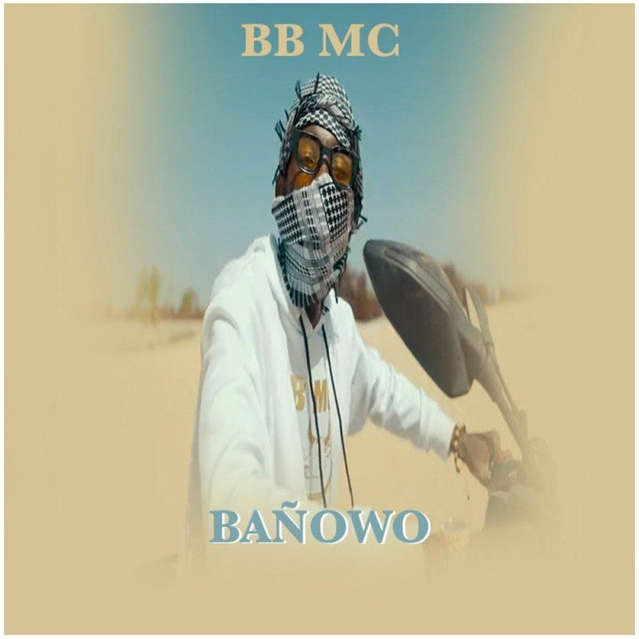
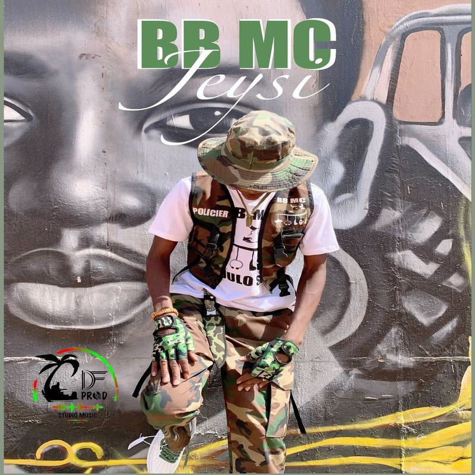
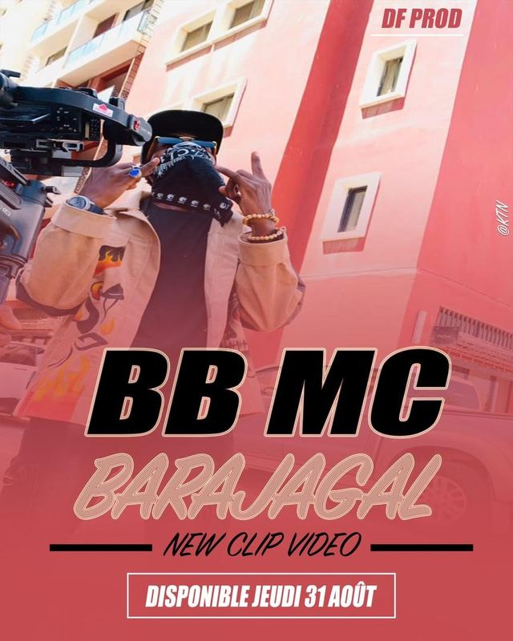

Discographie
Albums, mixtapes
Albums, mixtapes
& clips
De l'EP avec D.G Team à l'album Tinndi Tiiɗɗi : écoutez, regardez, partagez.
Accueil / Musique

- Debbo Lamdo feat. Mussu
- Fuuta feat. Gawlo Africa
- Anndu Hoorema feat. Agnès Dji
- Commandants feat. Safaray & Wizaby
- Jombajo feat. Salif Tassor
Album studio · 15 août 2025
0:00 / 0:00
Tinndi Tiiɗɗi
Premier album studio de BB MC : 21 titres entre tradition peule et modernité hip-hop. Le projet a propulsé ses clips au-delà du million de vues.
—
BB MC · Tinndi Tiiɗɗi
- 01Tinndi Tiiɗɗi
- 02Gilli Cukalel
- 03Concept
- 04Fuuta feat. Gawlo Africa
- 05Talent
- 06Debbo Laamɗo feat. Mussu
- 07Yah Wiɓɓe
- 08Yaɓɓu ɗoo
- 09Miin Waawi
- 10Anndu Hooremaa feat. Agnés Dji
- 11So Hoddiraama
- 12Parani
- 13Wow-Wow
- 14Jombaajo feat. Salif Tassor
- 15Jarabi
- 16O Yiɗaama
- 17Fête Ta Vie
- 18Commandants feat. Safaray & Wizaby
- 19Yeeweende
- 20Politique
- 21Neene (Bonus)
Discographie
Mixtapes & projets
Quatre projets majeurs qui retracent l'évolution d'un style : du collectif D.G Team à l'album solo.
2025 · Album
Tinndi Tiiɗɗi
21 titres. L'œuvre de la maturité, portée par Debbo Lamdo et Fuuta.

2023 · Mixtape
Nofuru
10 titres, sortie le 30 décembre 2023. Productions modernes (Nda Nda, Gilli Beldi).

2022 · Mixtape
Naayi Laddé
18 titres, sortie le 7 mai 2022. Le projet qui établit sa réputation, suivi d'une tournée de 65 dates.

2018 · EP
Mine Ndiédjitani
Sorti le 31 mars 2018 avec le groupe Daranibé Goonga : la base de son identité musicale.
Mixtape · 2023
0:00 / 0:00
Nofuru
Extraits disponibles à l'écoute.
—
BB MC · Nofuru
- 02Gilli Beldi
- 08Mijoji
- 10Itanam Ko Wone Berdam Ko
Mixtape · 2022
0:00 / 0:00
Naayi Laddé
La mixtape intégrale, 18 titres.
—
BB MC · Naayi Laddé
- 01Guiddo
- 02Kiraam
- 03Love
- 04Boudel Ilo
- 05Avertisment
- 06Allah Wadi Jimo
- 07Diamfo
- 08Guilli
- 09Policer
- 10Wallo Fendo
- 11Yéwama BB
- 12Poulagou
- 13Bejida Yidde Diahowo
- 14Adouna
- 15TikéRé Ma
- 16Kongui Kawnidi
- 17Cool Bila Cool
- 18Ko Mi Kirow
Vidéos officielles
Chaîne YouTube Tous les clips


Singles
Pochettes






Statistiques & audience
10,6 M
10 625 792 vues cumulées sur la chaîne YouTube officielle.
57 948Streams Spotify
47 763Streams Apple Music
1 763Streams Deezer
507Amazon Music
Streaming : album Tinndi Tiiɗɗi. Données octobre 2026.
Concerts · Festivals · ÉvénementsFaites venir